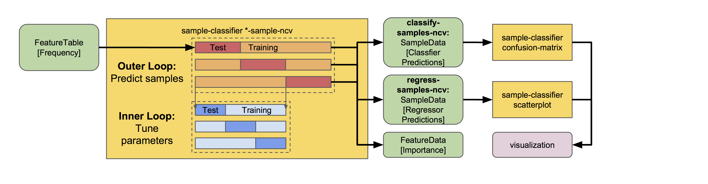

Predicting sample metadata values with q2-sample-classifier¶
Note
Documentation for using all plugin actions through the Python API and command line interface is available in the q2-sample-classifier reference documentation.
Note
This guide assumes you have installed QIIME 2 using one of the procedures in the install documents and completed the moving pictures tutorial.
Warning
Just as with any statistical method, the actions described in this plugin require adequate sample sizes to achieve meaningful results. As a rule of thumb, a minimum of approximately 50 samples should be provided. Categorical metadata columns that are used as classifier targets should have a minimum of 10 samples per unique value, and continuous metadata columns that are used as regressor targets should not contain many outliers or grossly uneven distributions. Smaller counts will result in inaccurate models, and may result in errors.
This tutorial will demonstrate how to use q2-sample-classifier to predict sample metadata values. Supervised learning methods predict sample data (e.g., metadata values) as a function of other sample data (e.g., microbiota composition). The predicted targets may be discrete sample classes (for classification problems) or continuous values (for regression problems). Any other data may be used as predictive features, but for the purposes of q2-sample-classifier this will most commonly be microbial sequence variant, operational taxonomic unit (OTU), or taxonomic composition data. However, any features contained in a feature table may be used — for non-microbial data, just convert your observation tables to biom format and import the feature table data into qiime2.
We will download and create several files, so first create a working directory.
mkdir sample-classifier-tutorial
cd sample-classifier-tutorial
Predicting categorical sample data¶
Supervised learning classifiers predict the categorical metadata classes of unlabeled samples by learning the composition of labeled training samples. For example, we may use a classifier to diagnose or predict disease susceptibility based on stool microbiome composition, or predict sample type as a function of the sequence variants, microbial taxa, or metabolites detected in a sample. In this tutorial, we will use the moving pictures tutorial data to train a classifier that predicts the body site from which a sample was collected. Download the feature table and sample metadata with the following links:
Download URL: https://data.qiime2.org/2020.2/tutorials/moving-pictures/sample_metadata.tsv
Save as: moving-pictures-sample-metadata.tsv
wget \
-O "moving-pictures-sample-metadata.tsv" \
"https://data.qiime2.org/2020.2/tutorials/moving-pictures/sample_metadata.tsv"
curl -sL \
"https://data.qiime2.org/2020.2/tutorials/moving-pictures/sample_metadata.tsv" > \
"moving-pictures-sample-metadata.tsv"
Download URL: https://data.qiime2.org/2020.2/tutorials/sample-classifier/moving-pictures-table.qza
Save as: moving-pictures-table.qza
wget \
-O "moving-pictures-table.qza" \
"https://data.qiime2.org/2020.2/tutorials/sample-classifier/moving-pictures-table.qza"
curl -sL \
"https://data.qiime2.org/2020.2/tutorials/sample-classifier/moving-pictures-table.qza" > \
"moving-pictures-table.qza"
Next, we will train and test a classifier that predicts which body site a sample originated from based on its microbial composition. We will do so using the classify-samples pipeline, which performs a series of steps under the hood:
The input samples are randomly split into a
trainingset and atestset. The test set is held out until the end of the pipeline, allowing us to test accuracy on a set of samples that was not used for model training. The fraction of input samples to include in the test set is adjusted with the--p-test-sizeparameter.We train the learning model using the training set samples. The model is trained to predict a specific
targetvalue for each sample (contained in a metadata column) based on the feature data associated with that sample. A range of different estimators can be selected using theestimatorparameter; more details on individual estimators can be found in the scikit-learn documentation (not sure which to choose? See the estimator selection flowchart).K-fold cross-validation is performed during automatic feature selection and parameter optimization steps to tune the model. Five-fold cross-validation is performed by default, and this value can be adjusted using the
--p-cvparameter.The trained model is used to predict the target values for each test sample, based on the feature data associated with that sample, and predict class probabilities for each sample. Class probabilities are the likelihood that a sample belongs to each class (i.e., group of samples with the same
targetvalue).Model accuracy is calculated by comparing each test sample’s predicted value to the true value for that sample.
qiime sample-classifier classify-samples \
--i-table moving-pictures-table.qza \
--m-metadata-file moving-pictures-sample-metadata.tsv \
--m-metadata-column body-site \
--p-optimize-feature-selection \
--p-parameter-tuning \
--p-estimator RandomForestClassifier \
--p-n-estimators 20 \
--p-random-state 123 \
--output-dir moving-pictures-classifier
Output artifacts:
moving-pictures-classifier/probabilities.qza: view | downloadmoving-pictures-classifier/sample_estimator.qza: view | downloadmoving-pictures-classifier/feature_importance.qza: view | download
Output visualizations:
This pipeline produces several outputs. First let’s check out accuracy_results.qzv, which presents classification accuracy results in the form of a confusion matrix, as well as Receiver Operating Characteristic (ROC) curves. This matrix indicates how frequently a sample is classified with the correct class vs. all other classes. The confusion matrix is displayed at the top of the visualization in the form of a heatmap, and below that as a table containing overall accuracy (the fraction of times that test samples are assigned the correct class). ROC curves are another graphical representation of the classification accuracy of a machine-learning model. The ROC curve plots the relationship between the true positive rate (TPR, on the y-axis) and the false positive rate (FPR, on the x-axis) at various threshold settings. Thus, the top-left corner of the plot represents the “optimal” performance position, indicating a FPR of zero and a TPR of one. This “optimal” scenario is unlikely to occur in practice, but a greater area under the curve (AUC) indicates better performance.
Question
What other metadata can we predict with classify-samples? Take a look at the metadata columns in the sample-metadata and try some other categorical columns. Not all metadata can be easily learned by the classifier!
This pipeline also reports the actual predictions made for each test sample in the predictions.qza output. This is a SampleData[ClassifierPredictions] artifact, which is viewable as metadata. So we can take a peak with metadata tabulate:
qiime metadata tabulate \
--m-input-file moving-pictures-classifier/predictions.qza \
--o-visualization moving-pictures-classifier/predictions.qzv
In addition to the predicted class information, the model also reports the individual class probabilities in probabilities.qza. This is a SampleData[Probabilities] artifact, and is also viewable as metadata, so let’s take a peak with metadata tabulate:
qiime metadata tabulate \
--m-input-file moving-pictures-classifier/probabilities.qza \
--o-visualization moving-pictures-classifier/probabilities.qzv
Another really useful output of supervised learning methods is feature selection, i.e., they report which features (e.g., ASVs or taxa) are most predictive. A list of all features, and their relative importances (or feature weights or model coefficients, depending on the learning model used), will be reported in feature_importance.qza. Features with higher importance scores were more useful for distinguishing classes. Feature importance scores are assigned directly by the scikit-learn learning estimator that was used; more details on individual estimators and their importance scores should refer to the scikit-learn documentation. Note that some estimators — notably K-nearest neighbors models — do not report feature importance scores, so this output will be meaningless if you are using such an estimator. Feature importances are of the semantic type FeatureData[Importance], and can be interpreted as (feature) metadata so we can take a look at these feature importances (and/or merge with other feature metadata) using metadata tabulate:
qiime metadata tabulate \
--m-input-file moving-pictures-classifier/feature_importance.qza \
--o-visualization moving-pictures-classifier/feature_importance.qzv
If --p-optimize-feature-selection is enabled, only the selected features (i.e., the most important features, which maximize model accuracy, as determined using recursive feature elimination) will be reported in this artifact, and all other results (e.g., model accuracy and predictions) that are output use the final, optimized model that utilizes this reduced feature set. This allows us to not only see which features are most important (and hence used by the model), but also use that information to filter out uninformative features from our feature table for other downstream analyses outside of q2-sample-classifier:
qiime feature-table filter-features \
--i-table moving-pictures-table.qza \
--m-metadata-file moving-pictures-classifier/feature_importance.qza \
--o-filtered-table moving-pictures-classifier/important-feature-table.qza
We can also use the heatmap pipeline to generate an abundance heatmap of the most important features in each sample or group. Let’s make a heatmap of the top 30 most abundant features in each of our sample types:
qiime sample-classifier heatmap \
--i-table moving-pictures-table.qza \
--i-importance moving-pictures-classifier/feature_importance.qza \
--m-sample-metadata-file moving-pictures-sample-metadata.tsv \
--m-sample-metadata-column body-site \
--p-group-samples \
--p-feature-count 30 \
--o-filtered-table moving-pictures-classifier/important-feature-table-top-30.qza \
--o-heatmap moving-pictures-classifier/important-feature-heatmap.qzv
Output artifacts:
Output visualizations:
Note
In the command above, we annotated the heatmap with sample-metadata. It is also possible to annotate these heatmaps with feature-metadata, e.g., to label the feature axis with species classifications.
This pipeline also produces a visualization containing a summary of the model parameters used by the supervised learning estimator in model_summary.qzv. If --p-optimize-feature-selection is enabled, the visualization will also display a recursive feature elimination plot, which illustrates how model accuracy changes as a function of feature count. The combination of features that maximize accuracy are automatically selected for the final model, which is used for sample prediction results that are displayed in the other outputs.
Question
What happens when feature optimization is disabled with the option --p-no-optimize-feature-selection? How does this impact classification accuracy?
Finally, the trained classification model is saved for convenient re-use in the sample_estimator.qza artifact! This allows us to predict metadata values for additional samples. For example, imagine we just received a shipment of new samples and wanted to use our pre-trained Body Site classifier to figure out what type of samples these new samples are. For the sake of convenience in this example, we will just pretend we have new samples and predict the values of the same samples that we used to train the model but NEVER do this in practice because:
Warning
Testing a supervised learning model on the same samples used to train the model will give unrealistic estimates of performance! 🦄
qiime sample-classifier predict-classification \
--i-table moving-pictures-table.qza \
--i-sample-estimator moving-pictures-classifier/sample_estimator.qza \
--o-predictions moving-pictures-classifier/new_predictions.qza \
--o-probabilities moving-pictures-classifier/new_probabilities.qza
Output artifacts:
We can view these new_predictions.qza (and new_probabilities.qza) using metadata tabulate, as described above… or if these aren’t actually “unknown” samples we can re-test model accuracy using this new batch of samples:
qiime sample-classifier confusion-matrix \
--i-predictions moving-pictures-classifier/new_predictions.qza \
--i-probabilities moving-pictures-classifier/new_probabilities.qza \
--m-truth-file moving-pictures-sample-metadata.tsv \
--m-truth-column body-site \
--o-visualization moving-pictures-classifier/new_confusion_matrix.qzv
Pretty cool! Accuracy should be inordinately high in these results because we ignored the warning above about testing on our training data, giving you a pretty good idea why you should follow the directions on the box! 😑
Note
The model we trained here is a toy example containing very few samples from a single study and will probably not be useful for predicting other unknown samples. But if you have samples from one of these body sites, it could be a fun exercise to give it a spin!
Question
Try to figure out what the --p-parameter-tuning parameter does. What happens when it is disabled with the option --p-no-parameter-tuning? How does this impact classification accuracy?
Question
Many different classifiers can be trained via the --p-estimator parameter in classify-samples. Try some of the other classifiers. How do these methods compare?
Question
Sequence variants are not the only feature data that can be used to train a classifier or regressor. Taxonomic composition is another feature type that can be easily created using the tutorial data provided in QIIME2. Try to figure out how this works (hint: you will need to assign taxonomy, as described in the moving pictures tutorial, and collapse taxonomy to create a new feature table). Try using feature tables collapsed to different taxonomic levels. How does taxonomic specificity (e.g., species-level is more specific than phylum-level) impact classifier performance?
Question
The --p-n-estimators parameter adjusts the number of trees grown by ensemble estimators, such as random forest classifiers (this parameter will have no effect on non-ensemble methods), which increases classifier accuracy up to a certain point, but at the cost of increased computation time. Try the same command above with different numbers of estimators, e.g., 10, 50, 100, 250, and 500 estimators. How does this impact the overall accuracy of predictions? Are more trees worth the time?
Predicting continuous (i.e., numerical) sample data¶
Supervised learning regressors predict continuous metadata values of unlabeled samples by learning the composition of labeled training samples. For example, we may use a regressor to predict the abundance of a metabolite that will be produced by a microbial community, or a sample’s pH, temperature, or altitude as a function of the sequence variants, microbial taxa, or metabolites detected in a sample. In this tutorial, we will use the ECAM study, a longitudinal cohort study of microbiome development in U.S. infants. Download the feature table and sample metadata with the following links:
Download URL: https://data.qiime2.org/2020.2/tutorials/longitudinal/sample_metadata.tsv
Save as: ecam-metadata.tsv
wget \
-O "ecam-metadata.tsv" \
"https://data.qiime2.org/2020.2/tutorials/longitudinal/sample_metadata.tsv"
curl -sL \
"https://data.qiime2.org/2020.2/tutorials/longitudinal/sample_metadata.tsv" > \
"ecam-metadata.tsv"
Download URL: https://data.qiime2.org/2020.2/tutorials/longitudinal/ecam_table_maturity.qza
Save as: ecam-table.qza
wget \
-O "ecam-table.qza" \
"https://data.qiime2.org/2020.2/tutorials/longitudinal/ecam_table_maturity.qza"
curl -sL \
"https://data.qiime2.org/2020.2/tutorials/longitudinal/ecam_table_maturity.qza" > \
"ecam-table.qza"
Next, we will train a regressor to predict an infant’s age based on its microbiota composition, using the regress-samples pipeline.
qiime sample-classifier regress-samples \
--i-table ecam-table.qza \
--m-metadata-file ecam-metadata.tsv \
--m-metadata-column month \
--p-estimator RandomForestRegressor \
--p-n-estimators 20 \
--p-random-state 123 \
--output-dir ecam-regressor
Output artifacts:
Output visualizations:
The outputs produced by this command are the same as those produced by classify-samples, with one exception. Regression accuracy results in accuracy_results.qzv are represented in the form of a scatter plot showing predicted vs. true values for each test sample, accompanied by a linear regression line fitted to the data with 95% confidence intervals (grey shading). The true 1:1 ratio between predicted and true values is represented by a dotted line for comparison. Below this, model accuracy is quantified in a table displaying mean square error and the R value, P value, standard error of the estimated gradient, slope, and intercept of the linear regression fit.
Question
What other metadata can we predict with regress-samples? Take a look at the metadata columns in the sample-metadata and try some other values. Not all metadata can be easily learned by the regressor!
Question
Many different regressors can be trained via the --p-estimator parameter in regress-samples. Try some of the other regressors. How do these methods compare?
Nested cross-validation provides predictions for all samples¶
In the examples above, we split the data sets into training and test sets for model training and testing. It is essential that we keep a test set that the model has never seen before for validating model performance. But what if we want to predict target values for each sample in a data set? For that, my friend, we use nested cross validation (NCV). This can be valuable in a number of different cases, e.g., for predicting mislabeled samples (those that are classified incorrectly during NCV) or for assessing estimator variance (since multiple models are trained during NCV, we can look at the variance in their accuracy).
Under the hood, NCV works a lot like the k-fold cross validation used in classify-samples and regress-samples for model optimization, but a second layer of cross validation (an “outer loop”) is incorporated to split the dataset into training and test sets K times such that each sample ends up in a test set exactly once. During each iteration of the “outer loop”, the training set is split again K times (in an “inner loop”) to optimize parameter settings for estimation of that fold. The end result: K different final models are trained, each sample receives a predicted value (and class probabilities if classify-samples-ncv is used for prediction of discrete classes), and feature importance scores are averaged across each iteration. Overall accuracy can be calculated by comparing these predicted values to their true values, as shown below, but for those interested in accuracy variance across each fold, mean accuracy ± SD is printed to the standard output.
There are NCV methods in q2-sample-classifier for both classification and regression problems. Let’s give both a spin, followed by visualizers to calculate and view aggregated model accuracy results.
qiime sample-classifier classify-samples-ncv \
--i-table moving-pictures-table.qza \
--m-metadata-file moving-pictures-sample-metadata.tsv \
--m-metadata-column body-site \
--p-estimator RandomForestClassifier \
--p-n-estimators 20 \
--p-random-state 123 \
--o-predictions body-site-predictions-ncv.qza \
--o-probabilities body-site-probabilities-ncv.qza \
--o-feature-importance body-site-importance-ncv.qza
Output artifacts:
qiime sample-classifier confusion-matrix \
--i-predictions body-site-predictions-ncv.qza \
--i-probabilities body-site-probabilities-ncv.qza \
--m-truth-file moving-pictures-sample-metadata.tsv \
--m-truth-column body-site \
--o-visualization ncv_confusion_matrix.qzv
qiime sample-classifier regress-samples-ncv \
--i-table ecam-table.qza \
--m-metadata-file ecam-metadata.tsv \
--m-metadata-column month \
--p-estimator RandomForestRegressor \
--p-n-estimators 20 \
--p-random-state 123 \
--o-predictions ecam-predictions-ncv.qza \
--o-feature-importance ecam-importance-ncv.qza
Output artifacts:
qiime sample-classifier scatterplot \
--i-predictions ecam-predictions-ncv.qza \
--m-truth-file ecam-metadata.tsv \
--m-truth-column month \
--o-visualization ecam-scatter.qzv
Note
We use confusion-matrix to calculate classifier accuracy, and scatterplot for regressor accuracy. 👀
So the NCV methods output feature importance scores and sample predictions, but not trained estimators (as is done for the classify-samples and regress-samples pipelines above). This is because (1) k models are actually used for prediction, where k = the number of CV folds used in the outer loop, so returning and re-using the estimators would get very messy; and (2) users interested in NCV are most likely not interested in re-using the models for predicting new samples.
Best practices: things you should not do with q2-sample-classifier¶
As this tutorial has demonstrated, q2-sample-classifier can be extremely powerful for feature selection and metadata prediction. However, with power comes responsibility. Unsuspecting users are at risk of committing grave errors, particularly from overfitting and data leakage. Here follows a list (though inevitably incomplete) of ways that users can abuse this plugin, yielding misleading results. Do not do these things. More extensive guides exist for avoiding data leakage and overfitting in general, so this list focuses on bad practices that are particular to this plugin and to biological data analysis.
Data leakage occurs whenever a learning model learns (often inadvertently) about test sample data, leading to unduly high performance estimates.
Model accuracy should always be assessed on test data that has never been seen by the learning model. The pipelines and nested cross-validation methods in q2-sample-classifier (including those described in this tutorial) do this by default. However, care must be taken when using the
fit-*andpredict-*methods independently.In some situations, technical replicates could be problematic and lead to pseudo-data leakage, depending on experimental design and technical precision. If in doubt, group your feature table to average technical replicates, or filter technical replicates from your data prior to supervised learning analysis.
Overfitting occurs whenever a learning model is trained to overperform on the training data but, in doing so, cannot generalize well to other data sets. This can be problematic, particularly on small data sets and whenever input data have been contorted in inappropriate ways.
If the learning model is intended to predict values from data that is produced in batches (e.g., to make a diagnosis on microbiome sequence data that will be produced in a future analysis), consider incorporating multiple batches in your training data to reduce the likelihood that learning models will overfit on batch effects and similar noise.
Similarly, be aware that batch effects can strongly impact performance, particularly if these are covariates with the target values that you are attempting to predict. For example, if you wish to classify whether samples belong to one of two different groups and those groups were analyzed on separate sequencing runs (for microbiome amplicon sequence data), training a classifier on these data will likely lead to inaccurate results that will not generalize to other data sets.